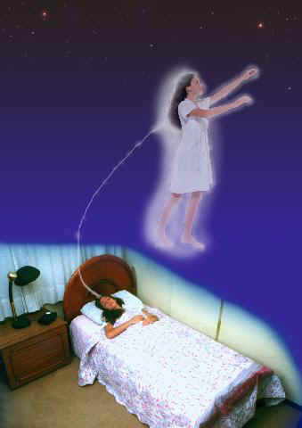

Classification of Conscious Projection Techniques
Preparations.
There are techniques, called basic techniques, related more to the preparation of the future projector and to the
basic method to produce a conscious projection. However, as for the derived techniques or formal systems to induce a projection, one must start by classifying them.Hundreds. There are hundreds of old, new, and perfected techniques to attain lucid OBEs in experiences brought about by one's own will. All of them are different
Ideal. The ideal method, or a single, safe, simple, and entirely effective formula to leave the body still does not exist. A technique that has been approved, found feasible by all, and adequate for everyone does not exist and we do not expect such a thing to develop very soon. This is due to the existence of multitude of personalities, physical constitutions, human characters, and individual behaviors. This is also due to the existence of three highly complex non-physical bodies (holochakra or energetic body, psychosoma or "astral" body, and mentalsoma or mental body) which have not developed equally and are not organized in terms of evolution as individual instruments of each consciousness.
Inadequacies. Although the newer methods are superbly superior to those used, for instance, half a century ago, they still are inadequate to meet the needs of all individuals of different sex, age, biotype, personality, temperament and conduct. If there were one universal method, conscious projection would be an asset to all individuals in many societies and on several levels of civilization since time immemorial. Presently, we have to make do with the fragmented knowledge we now possess. There are fields of the science of projectiology in which we are still ignorant, and further research is needed.
Reasons. There are many correct ways of inducing conscious projections in a good human environment; therefore you should not use a single OBE technique, but use everything that will help you to healthily attain your objective to have conscious projections with recall.
Attributes. OBE techniques are based on one or several attributes of yourself, such as imagination, visualization, mental concentration, etc. You, a candidate to conscious projection, must check, with self-criticism, which is your best attribute or the most versatile, in order to use it as a basic tool.
Abilities. Physical and mental relaxation, clearing the mind naturally, and redirecting attention out of the human body are the most necessary and promising abilities you can present as a candidate to great conscious projections.
Self-confidence. On the other hand, if you are confident that a certain technique will work for you, it probably will.
Combinations. Sometimes, it is better to combine several different methods to leave the body, adapting them to your character, circumstances, etc. However, any OBE technique, to be truly effective, tests your will-power in terms of being a fearless, disciplined and persevering person.
Chances. Once we assume that there is no universal method which would work for everyone to attain conscious projection, we will present many different kinds of techniques. It is convenient for you to know them all in order to ensure a greater chance of finding the one which will be more efficient and adequate for you or which will, at least, inspire you to search for your own method.
Compensation. Rehearse all methods and accessory means available (such as bioenergy control, etc.) because, on a long term basis, conscious projection will reward all your sacrifices.
Adequacy. As you will realize, there are techniques that can help a specific group, since they adapt better to the conditions pertaining to that group. For example: the carbon dioxide technique is for people who have good lungs, the hetero-hipnosis is for people who are impressionable, the projectiogenic images technique is for those with an artistic personality, the sexual relation technique is for the couple-projector, the physiological method helps those who have a strong will, the assisted projection technique is for people who are developed mediums, the projective dream technique is for those who dream extensively, and so on.
Sleep. Some techniques can only be used by those who sleep alone, otherwise they will disturb anyone nearby.
Characteristics. There are techniques for the aided projector, i.e., those who practice the projection with someone else nearby, such as: sexual relation and massages. The veteran projector can use mentalsoma projection, repetition, and rolling over backwards. Others require movement, such as: sexual relation, carbon dioxide, massage, pineal, rotation, and break-in-routine.
Preferences. Among all the techniques herein described for voluntary projection, two are usually preferred because they are easier and spontaneous. These are self-hypnosis and projective dreams.
Motivation. In spite of what has already been said, research still has not proven that there is a single method which can be considered better than any other. All of the methods can work if you master the techniques to induce progressive and deep neurological and muscular relaxation and have enough motivation to temporarily leave the human body.
Others. Besides those mentioned, which are considered the most practical, there are hundreds of other methods for conscious projections that compliment the tendencies of your personality. Here are five examples:
170.01. Extraphysical. Realistic, direct request to a known extraphysical helper - a trustworthy / trusted extraphysical entity that can help you project lucidly.
170.02. Parapsychological. Use of energizations or energetic touch of certain chakras to intensify the vibrations (vibrational state) and produce the departure of the psychosoma.
170.03. Psychological. Acute concentration upon a single chosen form which one tries to see in a dream to provoke the extraphysical awakening.
170.04. Physiological. Swinging movement of the head and sudden lashing backwards.
170.05. Physical. Placing oneself in a rhythmically flashing light; sensory deprivation; decrease of personal vital levels; etc.
Deprivation. Sensorial deprivation is the absence of all outside stimulation. This is obtained in special tanks, many of them used in laboratories. Those tanks provide a monotonous environment in which there is complete silence, complete darkness, and the individual floats in tank of treated water regulated for body temperature. You can seek an environment which would allow as much sensory deprivation as possible. Here are some technical orientations: lie on a comfortable bed, in a dark and silent room, in which you can use a "mask noise" to cover up other sounds. You can also use a mask for the eyes if you wish. In addition, rest your head on a U-shaped pillow that would cover your ears. If you want to increase the deprivation, you can also wear cotton gloves, wrap a thick paper around your arms, fists and hands, covering also your fingers. That will prevent you from having tactile perceptions. For sure those hard, deprived conditions can help one to produce an conscious OBE.
Phenomena. In using any of these projection techniques, you might experience common phenomena, such as: vibrational state; lucid dreams or semi-conscious projection; harmless physical catalepsy, etc.
Attempts. Of course you do not have to try all the methods, but you have nothing to loose in attempting to use any method which will not harm your physical or mental health.
Source: http://www.iipc.org/obe_techniques/classification.htm